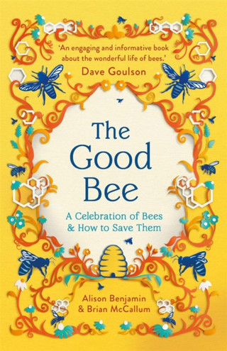
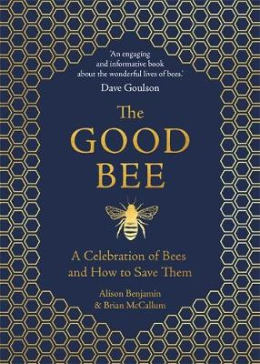
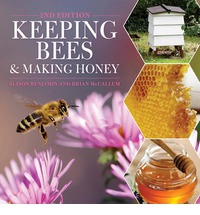

follow us on


follow us on |
The Good Bee: A Celebration of Bees and How to Save Them (Paperback) Published by Michael O’Mara Bees are our most loyal ally. These enigmatic creatures are a key lynchpin in the working of our plant. Without them our world would simply not function. We can all help protect them – and they desperately need protecting – but you can’t save what you don’t love. And you can’t love what you don’t know. In the Good Bee, bee experts Alison Benjamin and Brian McCallum share their own infectious fascination and awe for this most vital and mysterious of nature’s wizards. Here you’ll discover the complexities of bee behaviour – as well as the bits that still baffle us – the part they play in the natural world, their relationship with us throughout history, the threats they are facing and what we can all do about it. It is a story for our times and a book to treasure. |
 |
The Good Bee: A Celebration of Bees and How to Save Them (Hardback) Published by Michael O’Mara Bees are our most loyal ally. These enigmatic creatures are a key lynchpin in the working of our plant. Without them our world would simply not function. We can all help protect them – and they desperately need protecting – but you can’t save what you don’t love. And you can’t love what you don’t know. In the Good Bee, bee experts Alison Benjamin and Brian McCallum share their own infectious fascination and awe for this most vital and mysterious of nature’s wizards. Here you’ll discover the complexities of bee behaviour – as well as the bits that still baffle us – the part they play in the natural world, their relationship with us throughout history, the threats they are facing and what we can all do about it. It is a story for our times and a book to treasure. |
 |
Keeping
Bees and Making Honey- The second edition of our best-selling book on how to get started in beekeeping. Illustrated with glorious photos, it includes how to harvest your bees' honey, honey recipes, candle making ideas and how to make your garden more bee-friendly. The new edition also includes more on varroa, colony collapse disorder and sections on beekeeping at the office and school apiaries. A perfect book for anyone who is thinking about beeping bees.
|
 |
A
World without Bees- |
 |
follow us on |
||